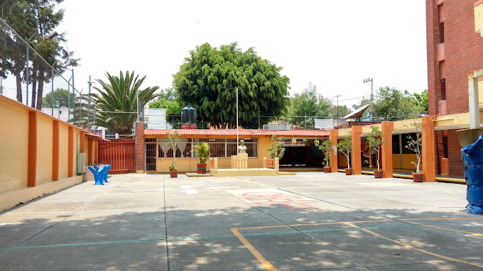
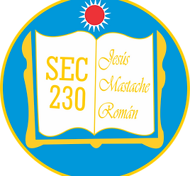
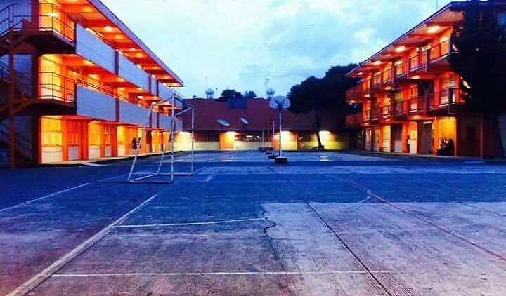
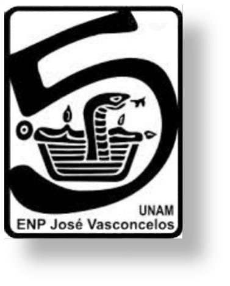
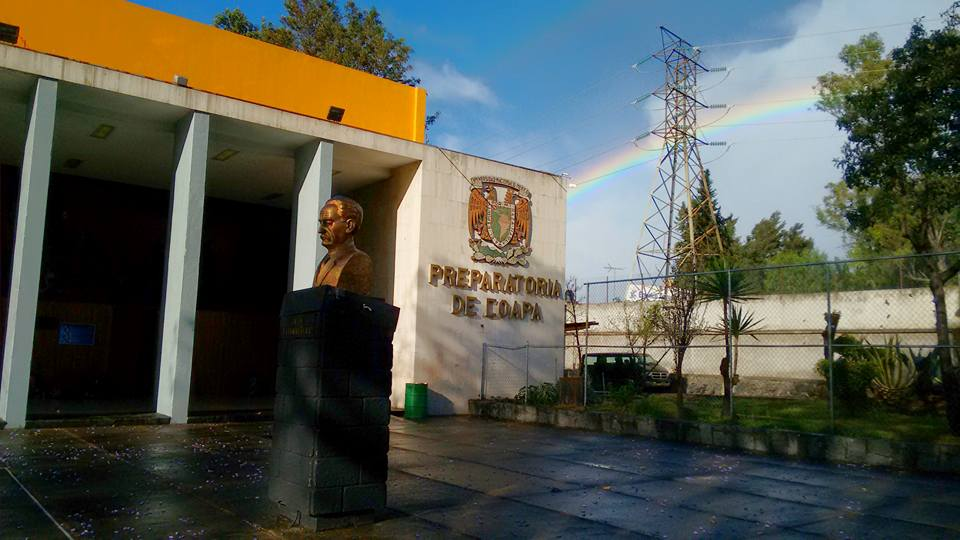
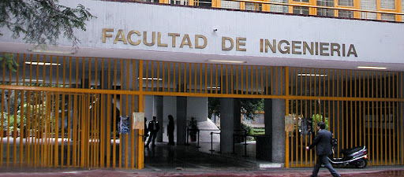
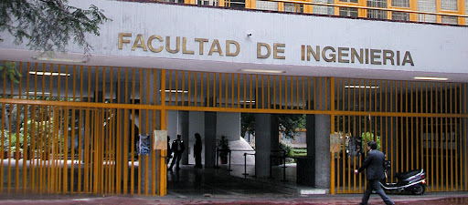

Escuela primaria
Margarita Maza de Juárez
A la edad de cuatro años, corría el 2009 cuando ingresé a un sistema escolarizado por primera vez. En esa escuela crecí y despertó mi curiosidad por el mundo en el que vivo, y el entorno que veo a mis alrededores. Me acogió por seis años donde aprendí valores básicos que me acompañan aún a día de hoy, y conocí lo que es la amistad.
Escuela secundaria
Diurna 230
"Jesús Mastache Román"
Fue en estos tres años de mi vida donde comencé a descubrir lo que en realidad me apasiona estudiar, me interesé por la lectura, la excelente planta de profesorado me alentó a explorar y animarme a hacer proyectos ambiciosos, a no retroceder cuando quiero hacer algo. Esta institución a la que estoy tan agradecido, me formó como ser humano.
 Bachillerato
Escuela Nacional Preparatoria
Núm. 5
"José Vasconcelos"
La preparatorio me dio el acercamiento a la UNAM, me sentí integrado por primera vez en un lugar tan vasto. Me afiancé en la enorme biblioteca que tiene, me uní al equipo representantivo de TaeKwonDo y participé en la olimpiada de matemáticas. Tuve la libertad de moverme a donde quisiera, amistar con compañeros y profesores. La prepa cinco me dio juicio, forjó carácter, consolidó mi identidad.
 Universidad
Universidad Nacional Autónoma de
México
Facultad de Ingeniería
La universidad fue el lugar en el que descubrí mi pasión por la programación. Ingresé y actualmente estudio ingeniería en computación en ella, con un hambre voraz por aprender temas de informática, hardware y software. Es la etapa de mi vida en la que más retos se me han presentado, los eventos en los que más me he esforzado y le estoy sumamente agradecido de presentarme un espacio de reflexión, donde formar una opinión crítica se vuelve crucial, agradecido de facilitarme el contacto con la planta de profesorado que no solo se dedica a enseñar los conocimientos técnicos, sino también sobre la vida.
 
